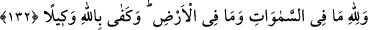

hepsi Allah’ındır.” Yâni Allah mülkün tamâmının sâhibidir. Sizin şükrünüz ve takvânız
O’na fayda vermediği gibi inkâr ve isyânınız da ona zarar vermez. O size ancak rahmet
ettiğinden emir ve tavsiyede bulunuyor, yoksa ihtiyâcından değil. Daha sonra Allah
Teâlâ âyetin devâmında bunu şöyle teyid ediyor. “Allah” mahlukattan ve onların
ibâdetlerinden müstağnîdir, “hudutsuz zengindir.” Zâtında ve sıfatlarında başkasına
bağlı değildir. Bilakis o, başka şeylere bağlı olmaktan münezzehtir. İster O’nu övsünler,
isterse övmesinler. O, zâtıyla “ziyâdesiyle övgüye lâyıktır.”
Gazâlî “Şerhu’l-esmâi’l-hüsnâ” adlı eserinde şöyle demiştir: “Allah Teâlâ ezelden
kendisini övdüğü, kulları da ebedî olarak övecekleri için övgüye layıktır. Bu da
kendisini zikreden zakirlere nisbetle, celâl, yücelik ve kemâl sıfatları ile ilgilidir.
Hamd, Allah’ın kemal vasıflarını kemal halinde olması bakımından zikretmektir.
Kullardan “hamîd” yâni övgüye lâyık olan, inançları, ahlâkı ve fiillerinin tamâmı
övülen kimsedir. O da Hz. Muhammed (s.a.v.) ve vasıfları ona yakın olan peygamberler,
diğer velîler ve âlimlerdir. Onların her biri akaidi, ahlakı, amelleri ve sözleri kadar
övgüye lâyıktır.
132- Göklerde ve yerde olanlar Allah’ındır. Vekil olarak Allah yeter.
“Göklerde ve yerde olanlar Allah’ındır.” Allah Teâlâ’nın bu âyeti üçüncü defa
tekrarlaması, O’nun başkalarına muhtaç olmadığına delil olması içindir. Çünkü bu,
bütün mahlûkatın O’nun zenginliğine muhtaç olmaları; onlara varlık, türlü türlü
husûsiyetler ve kemalât vermiş olması O’nun müstağnî ve övülmeye lâyık olduğuna
delâlet eder. Öyleyse âyette tekrar yoktur. Bu lafızlardan her biri yeni bir hüküm ifade
etmektedir.
Bütün varlıkların işlerini düzenlemede “vekil olarak Allah yeter.” Bütün işlerin
Allah’dan başkasına değil, sâdece O’na havâle edilmesi gerekir.
133- Ey insanlar! Allah dilerse sizi yok eder ve başkalarını getirir; Allah buna
kadirdir.
“Ey insanlar! Allah dilerse sizi yok eder.” Yâni sizi ortadan kaldırır, bir defâda
kökünüzü kazır “ve başkalarını getirir.” Yâni bir defada sizin yerinize başka
âdemoğullarını veyâ âdemoğullarının yerine başka mahlukatı yaratır. Evet Allah sizi yok
etmek ve başkalarını yaratmak isteseydi bunu yapardı. Sizi, isyân üzere olduğunuz halde